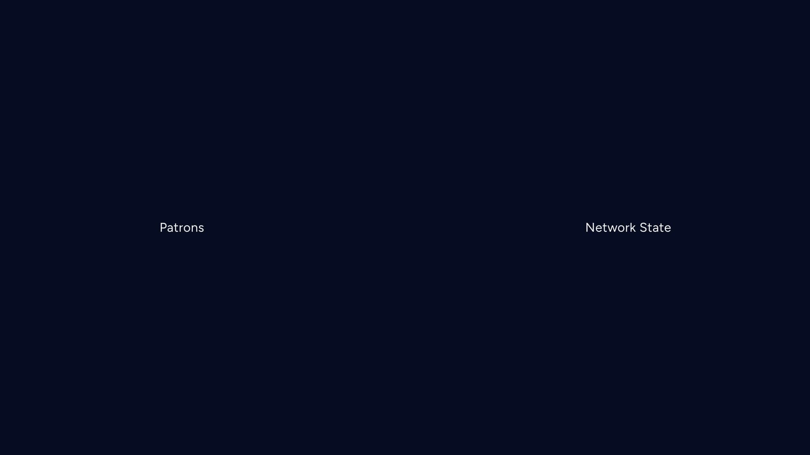
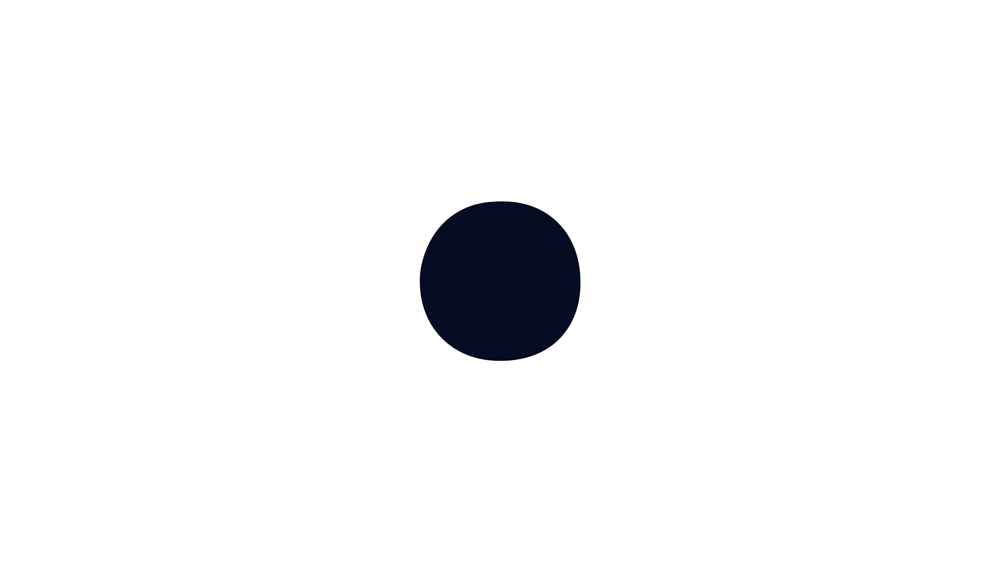
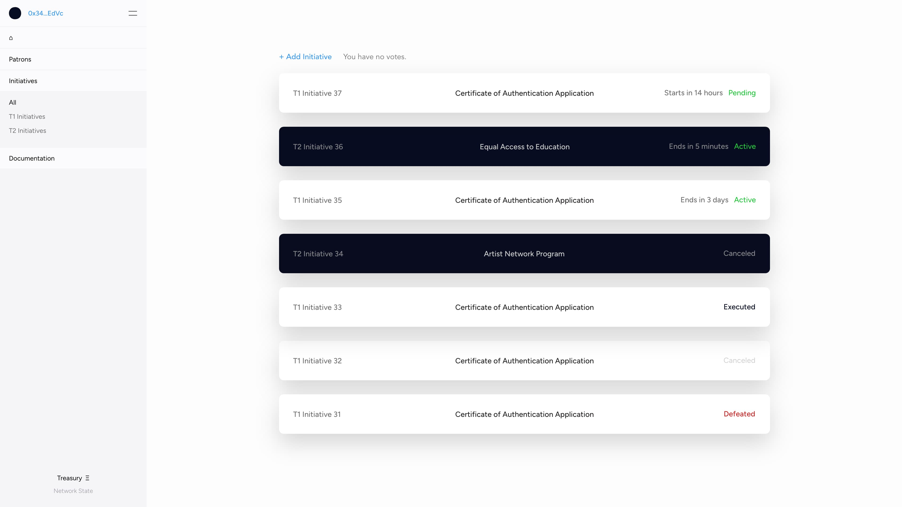
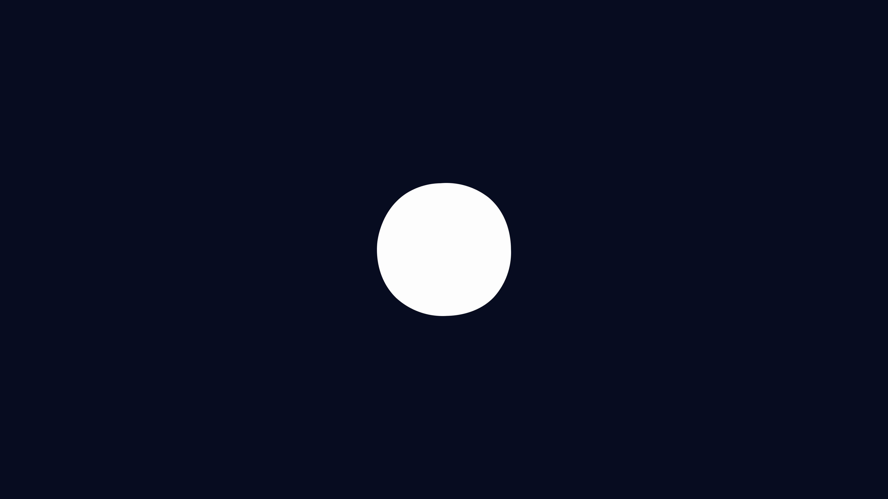
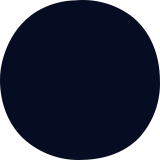

We, as Patrons, present “Patrons,” a Decentralized Autonomous Organization (DAO) with the purpose to protect, support, and evolve the living phenomena of Art and Humanity, one Initiative at a time. We are diverse individuals and entities ranging from Artists, Technologists, Humanitarians, Scientists, Museums, Non-Profits, DAOs and many other forms. We push Art and Humanity forward by starting and forming a consensus around Initiatives and funding them through the Treasury generated from various sources, such as auctions and contributions. Each Initiative serves as a pillar for Art and Humanity.
We, as Patrons, also present “Network State”, the living phenomena of Art and Humanity, a highly aligned decentralized ecosystem and permanent neutral ground in which to reside, formed and governed by Patrons. Through collective intellect and resources, Patrons work towards self-sustainment in disciplines ranging, from blockchain, artificial intelligence, virtual and augmented reality, quantum computing, synthetic biology, nanotechnology, and other means to transition from centralized structures into an advanced Network State.
If you, as an individual or entity, believe that your true form is to protect, support, and evolve the living phenomena of Art and Humanity and want to determine the future of the Network State, become a Patron.
Patrons protect, support, and evolve the living phenomena of Art and Humanity, one Initiative at a time.
Individuals and entities can become Patrons by minting a Patron soulbound Non-Fungible Token (NFT).
Patron NFTs grant residence to Patrons DAO within the Network State.
Patrons are diverse individuals and entities.


All Patrons can take action by starting an Initiative.
Initiatives protect, support, and evolve Art and Humanity.
There are three types of Initiative funding tiers: Tier 1 (T1), Tier 2 (T2), and Grants.
For both T1 and T2 Initiatives to pass, a minimum quorum of participating T1 and T2 Patrons is required, with the specific percentage determined on a per-Initiative basis.
Initiatives require a majority consensus to pass, with the specific threshold determined on a per-Initiative basis.
T1 Initiative
T1 Initiatives have a maximum funding limit of Ξ500-2,000.
Two T1 Patron Endorsements are needed to be taken to Vote.
T2 Initiative
T2 Initiatives have a maximum funding limit of Ξ2-500.
Four T1 Patron or T2 Patron Endorsements are needed to be taken to Vote.
Grants
An Initiative with a maximum funding limit of Ξ0.1-25 that does not go through the voting process.
An Initiative that is time sensitive or needs retroactive funding.
Guidlines
Patrons take part in Patrons DAO and the Network State by joining Governance.
There are two types of Governance Tiers: Tier 1 (T1) Patron and Tier 2 (T2) Patron.
Patrons attain Governance by winning a T1 Patron NFT auction or minting a T2 Patron NFT, both limited per quarter.
T1 Patrons and T2 Patrons are granted additional rights to Endorse and Vote on Initiatives.
*Note - It is recommended to only hold one Governance T1 or T2.
Tier 1 Patron
One Tier 1 Patron NFT auction each week on Sunday alternating times 12PM EST and 12AM EST Forever.
Two highest bidders receive Tier 1 Patron NFT.
• Generative Imperfect Circle, with color of choice (including exclusive T1 Gold or T1 Platinum)
• Grants the rights to endorse a T1 and T2 Initiative and vote.
• One T1 Patron NFT grants one vote in T1 and T2 Initiatives.
• Access to the T1 Patrons and T2 Patron privates Discord channel.
Tier 2 Patron
T2 Patron NFTs are auctioned off to the highest bidder every 36 hours.
An auction begins every 36 hours at either 12 PM EST or 12 AM EST, alternating each time.
• Generative Imperfect Circle with a selected color choice.
• Grants the Rights to Endorse a T2 Initiative and Vote.
• One T2 Patron NFT grants one vote in T2 Initiatives.
• Access to the T2 Patron private Discord channel.
Governance Rights
Operators Governance
The Treasury, housed in the Network State, is generated from various sources, such as auctions, funding, and contributions, to support Initiatives.
100% of T1 Patron NFTs sales fund the Treasury forever.
100% of T2 Patron NFT sales fund the Treasury forever.
90% of Patron NFT sales fund the Treasury for 5 years.
• After 5 years, 100% of Patron NFT sales fund the Treasury forever.
10% of T1 Patrons, T2 Patrons, and Patrons secondary sales (royalties) fund Treasury.
Treasury funds Initiatives.
Initiatives can fund Treasury.
• 10% of Initiative revenue is recommended.
*Note - Royalties are set at 10% to provide ongoing funding for the Treasury in the event of a sale.
Network State, the living phenomena of Art and Humanity, a highly aligned decentralized ecosystem and permanent neutral ground in which to reside, formed and governed by Patrons.
Through collective intellect and resources, Patrons work towards self-sustainment in fields ranging, from blockchain, artificial intelligence, virtual and augmented reality, quantum computing, synthetic biology, nanotechnology, and other means to transition from centralized structures into an advanced Network State.
To participate in the Network State, individuals and entities will require a T1 Patron, T2 Patron, or Patron NFT.
The Network State Infrastructure is funded through Initiatives.

Components
The core building blocks of the Network State, components work in synergy to create an interconnected and decentralized environment that pushes Art and Humanity forward.
• Patrons: The individuals or entities who protect, support, and evolve Art and Humanity through their active engagement and contributions in the Network State.
• Identity: The unique digital representation of individuals or entities within the Network State, ensuring privacy and security while encouraging creative expression.
• Assets: The resources, both tangible and intangible, that are managed, utilized, and exchanged within the Network State to create value and drive Artistic and Humanitarian initiatives.
• Governance: The decision-making processes and structures that direct the operations, development, and evolution of the Network State, balancing transparency, accountability, and inclusiveness.
• Communication: The channels, platforms, and tools that facilitate information exchange, collaboration, and dialogue within the Network State, promoting openness and respect among creative minds.
• Education: The systems and resources designed to provide learning opportunities, encourage growth, and share knowledge among members of the Network State in the realms of Art and Humanity.
• Environments: The physical and virtual spaces within the Network State that are designed to be inclusive, engaging, and supportive of diverse Artistic and Humanitarian activities and experiences.
• Transaction: The methods and systems employed within the Network State to securely and efficiently facilitate exchanges, transfers, and interactions of value in support of creative projects and initiatives.
• Dapps: Decentralized applications built on the underlying blockchain infrastructure of the Network State, designed to be innovative and user-centric, addressing various Artistic and Humanitarian needs and functionalities.
• Sustainability: The commitment to the long-term stability and growth of the Network State as a hyperstructure, emphasizing responsible resource management, resilient infrastructure, adaptive processes, and the integration of eco-friendly practices in support of Art and Humanity.
Pillars
The Pillars provide a framework for decision-making and maintaining a shared vision for an efficient Network State.
• Access: Ensuring that opportunities, resources, and information within the Network State are available to all, regardless of their background or circumstances, promoting inclusivity and equal opportunity for everyone.
• Permanence: Establishing a stable and enduring foundation for the Network State that guarantees the long-term availability, preservation, and integrity of its resources, assets, and information.
• Trust: Establishing an environment of reliability, honesty, and transparency within the Network State, enabling participants to confidently engage with one another and the ecosystem as a whole.
• Accountability: Ensuring that all actions and decisions within the Network State are clearly communicated, transparent, and held to a high standard of responsibility and ethics.
• Innovation: Encouraging and supporting the development of new ideas, technologies, and approaches within the Network State that challenge conventional norms and push the boundaries of Art and Humanity.
• Neutral: Providing a balanced and impartial environment within the Network State that supports open dialogue, collaboration, and mutual understanding among diverse individuals and entities.
• Collaboration: Facilitating cooperation and joint efforts among participants within the Network State to achieve common goals and create shared value.
• Sustainability: Promoting responsible resource management, resilient infrastructure, adaptive processes, and eco-friendly practices within the Network State to ensure its long-term stability and growth.
• Diversity: Celebrating and embracing the unique perspectives, backgrounds, and experiences of individuals and entities within the Network State, creating a culture of inclusivity and mutual respect.
• Education: Providing opportunities for learning, growth, and knowledge-sharing within the Network State, empowering participants to develop their skills and understanding in the realms of Art and Humanity.
• Community: Cultivating a sense of belonging and interconnectedness among participants within the Network State, ensuring a supportive and collaborative environment that enables everyone to thrive.
Operators
Operators are Patrons dedicated to building and maintaining the infrastructure and components that support the Network State growth and functionality.
Patrons who are passionate about contributing their skills and expertise to the development of the Network State can join one of these Operator groups.
• Strategy: Strategists focus on shaping the vision and direction of the Network State, working closely with other Operators to ensure alignment with its core values and objectives.
• Wireframe: Wireframe specialists contribute to the user interfaces and experiences within the Network State, ensuring they are intuitive, user-friendly, and aligned with the overall design vision.
• Design: Designers are responsible for the visual aesthetics of the Network Statement, creating engaging and visually appealing experiences for Patrons and other participants.
• Copywriting: Copywriters craft compelling written content that communicates the Network State values, goals, and initiatives to various audiences.
• Development: Developers build and maintain the technical infrastructure of the Network State, working closely with other Operators to ensure alignment with goals and objectives.
• Community: Community-focused operators promote engagement and facilitate communication and collaboration within the Network State, fostering a positive and collaborative environment among participants.
• Operations: Operations specialists oversee the day-to-day management and smooth functioning of the Network State, coordinating activities across different areas to maintain performance, productivity, and overall success.
• Finance: Financial Operators ensure the Network State finances are sourced, allocated, and managed effectively to support various initiatives.
• Legal: Legal Operators provide legal guidance and ensure compliance with relevant laws and regulations for the Network State.
Interface
The Network State Interface is designed as a blank canvas and is the entry point for Patrons to build, connect, collaborate, and contribute to Art and Humanity.
Backend
The Network State backend is the core, providing a robust and secure foundation, supporting the seamless functioning of the Components.
Designed with the future in mind, the backend infrastructure is crafted to enable Patrons to create, innovate, and enhance the core systems as the Network State scales.

Feeling insecure and alienated from others, the Imperfect Circle tried to join the ranks of the perfect circles, but over time its true self started to diminish along with the traces of its imperfect shape.
After the long quest for an ideally manufactured line, the Imperfect Circle realized that perfection was an abstraction and utopia - an elusive ideal with many interpretations that was impossible to achieve. Eventually, the purest form of perfection was found in its stead: authenticity with all its flaws and mistakes. The Imperfect Circle came back to its innermost being - its original form, unique, real, and free - accepting the innate beauty of itself and others.
But its imperfect shape can only be seen and appreciated by those who are able to look deeper and recognize its true form.
Core Values
Protect, Support and Evolve the living phenomena of Art and Humanity, one Initiative at a time.
• Professional: Uphold ethical standards and demonstrate responsibility in all actions.
• Neutral: Ensure impartiality, factual accuracy, and trustworthiness in all aspects.
• Authentic: Nurture genuine expression and uniqueness.
• Empathetic: Cultivate understanding and support.
• Collaborative: Work together for the betterment of Art and Humanity.
• Innovative: Embrace new ideas and technologies.
• Exceptional: Pursue the highest standards in all endeavors.
• Adaptive: Embrace change and accommodate new circumstances.
• Educational: Encourage learning, growth, and shared knowledge.
• Sustainable: Prioritize responsible resource management.
A high-level overview of important dates and milestones for Patrons and Network State.
As the project evolves, more detailed plans and dates will be provided to accomplish specific objectives.
*Note - This initial framework is adaptable and subject to change based on Patron feedback and needs.
Phase 1 - Become a Patron
T1 Patron NFTs 7-day auctions will commence on Sunday, May 14th, 2023, at 12:00 PM EST and will occur every Sunday thereafter, starting at alternating times (12 PM EST or 12 AM EST) each week, indefinitely.
Patron NFTs will be made available starting on Sunday, May 14th, 2023, at 12:00 PM EST indefinitely.
T2 Patron NFTs 36-hour auctions will commence on Wednesday, June 14th, 2023, at 12:00 PM EST and will occur every 36 hours thereafter, indefinitely.
Phase 2 - Initiatives
T1 and T2 Initiatives will be made available starting on Sunday, July 3rd, 2023, at 12:00 PM EST.
Phase 3 - Network State - Patrons
Network State will be made available to all Patrons starting on Sunday, July 3rd, 2023, at 12:00 PM.
Phase 4 - Network State - All Users
Network State will be made available to all users (TBD)
Designed to encourage Patrons to get involved and contribute to group building efforts, in addition to working on their own initiatives.
As Patrons and Network State grow and scale, it is anticipated that additional events and activities will be introduced to the weekly schedule, taking into consideration more timezones with more Patrons leading these initiatives.
*Note - This initial framework is adaptable and subject to change based on Patron feedback and needs.
Monday - Office Hours (1 PM-3 PM EST)
• Open forum for Patrons to ask questions, discuss ideas, and collaborate on projects.
• Opportunity for new Patrons to introduce themselves and get acquainted with the community.
Tuesday - Infrastructure Development Discussions (6 PM - 8 PM EST)
• Focused sessions to brainstorm and collaborate on ways to improve the Network State infrastructure, such as interface, backend systems, Dapps, sustainability practices, and more.
• Encourages the sharing of ideas, resources, and expertise to enhance the overall Network State.
Wednesday - Initiative Pitches (1 PM - 3 PM EST) (10 AM - 12 PM CST)
• Platform for Patrons to present and pitch their T1 and T2 Initiatives to the community.
• Opportunity to gather feedback, refine proposals, and build support for projects.
Thursday - Infrastructure Development Discussions (6 PM - 8 PM EST)
• Focused sessions to brainstorm and collaborate on ways to improve the Network State infrastructure, such as interface, backend systems, Dapps, sustainability practices, and more.
• Encourages the sharing of ideas, resources, and expertise to enhance the overall Network State.
Friday - Art and Humanity Showcase (1 PM - 3 PM EST)
• Weekly event highlighting the artistic and humanitarian projects and accomplishments of Patrons within the community.
• Offers a platform for creative expression, inspiration, and constructive feedback.
Friday - Weekly Recap and Planning (4 PM - 5 PM EST)
• Summary of the week’s accomplishments, challenges, and lessons learned.
• Opportunity to recognize and celebrate the achievements of Patrons.
• Planning for the upcoming week, including setting goals and objectives for continued progress.